About Me
Hello! I'm Santhosh, a passionate developer and anime enthusiast. I enjoy building creative web applications and exploring new technologies. I'm originally from Kakinada, a beautiful coastal city in Andhra Pradesh known for its scenic beauty and cultural heritage.
When I'm not coding, you'll find me watching anime, discussing plot theories, or sketching my favorite characters. I believe in continuous learning and pushing boundaries to create meaningful digital experiences.
I'm also deeply emotional and romantic at heart, finding inspiration in the little things—like a rainy evening, a heartfelt story, or a beautifully written line of code. Every project I create carries a piece of my soul, and I dream of touching lives through the art of technology.
Photo's of places near me


Achievements
- üèÜ JEE Rank: 705
- üéØ JEE Advanced Rank: 1130
- ü•á AP EAMCET Rank: 239
- ü•à TS EAMCET Rank: 78
- üìö 10th Grade: 584/600
- üéì Intermediate: 979/1000
Education Journey
Narayana School, Kakinada
Class 1st
Started my educational journey at Narayana School in Kakinada, where I developed a strong foundation in academics.

St. John School, Gannavaram
Class 2nd - 3rd
Continued my primary education at St. John School in Gannavaram, focusing on core subjects and participating in various extracurricular activities.
Sri Viswasanthis, Vuyyuru
Class 4th - 7th
Spent my middle school years at Sri Viswasanthis in Vuyyuru, where I developed interest in science and mathematics while participating in various school competitions.

KKR Gowtham School, Gudiwada
Class 8th
Studied at KKR Gowtham School in Gudiwada for a year, where I further refined my academic skills.
Sri Viswasanthi, Vuyyuru
Class 9th - 10th
Returned to Sri Viswasanthi for my high school education, where I completed my 10th grade with an impressive score of 584/600.
Raman Bavan-1, Gudawalli
Class 11th - 12th
Completed my intermediate education at Raman Bavan-1 in Gudawalli with a remarkable score of 979/1000.
IIIT Hyderabad
B.Tech in Computer Science
Currently pursuing my B.Tech in Computer Science at IIIT Hyderabad, one of India’s premier institutes for technology and research.
Technical Skills
Hobbies
Drawings


Anime watched


 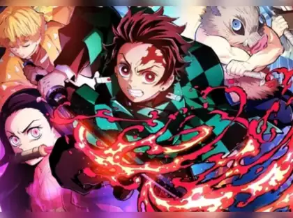
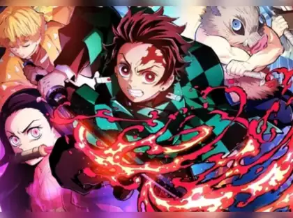

 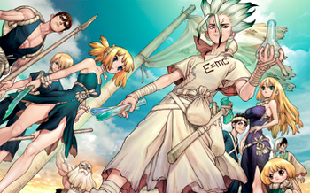
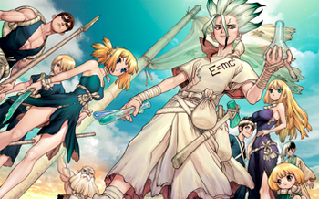


 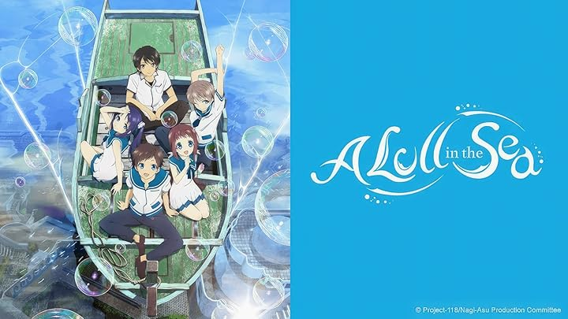
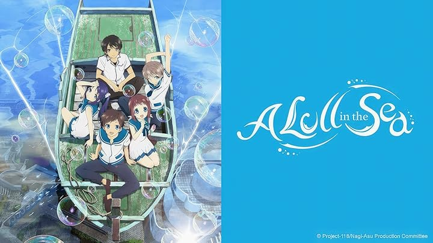

 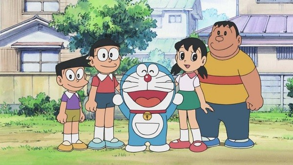
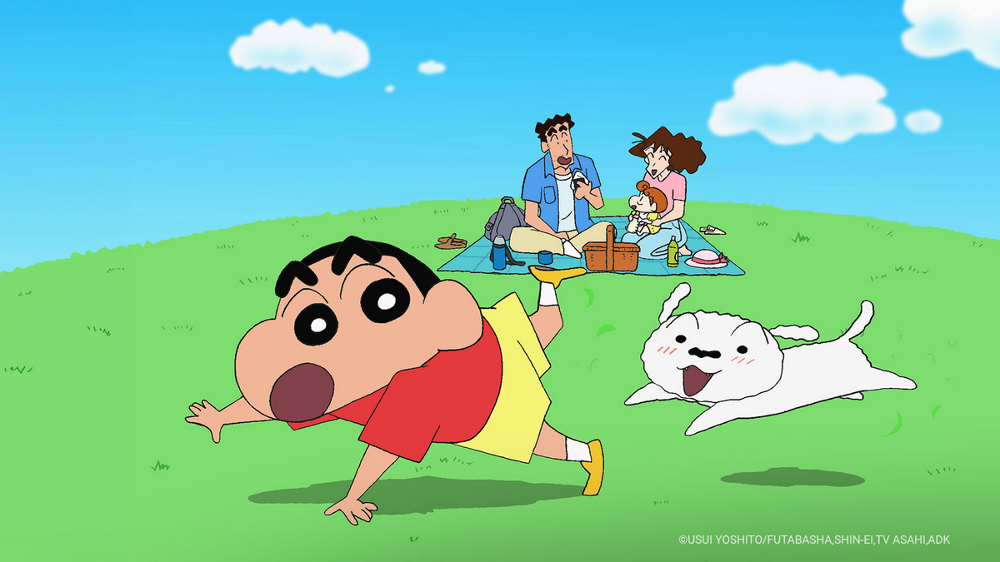
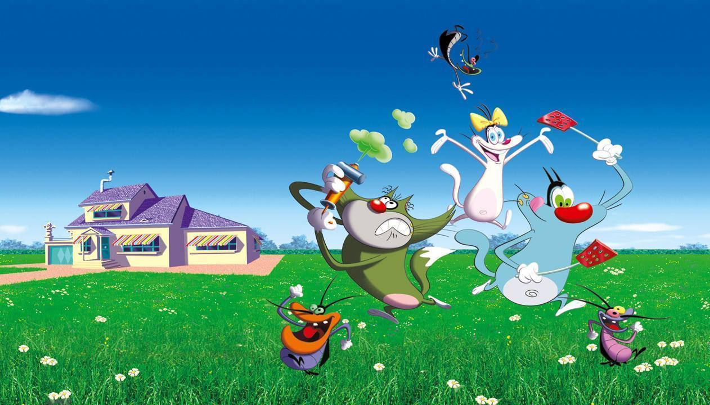
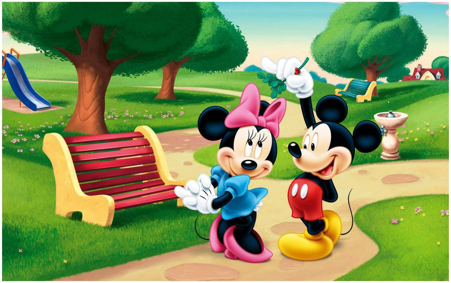
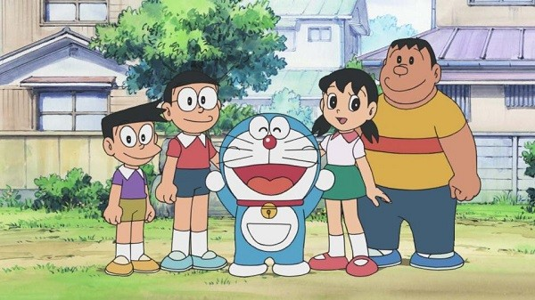
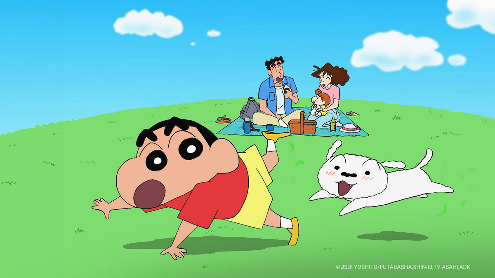
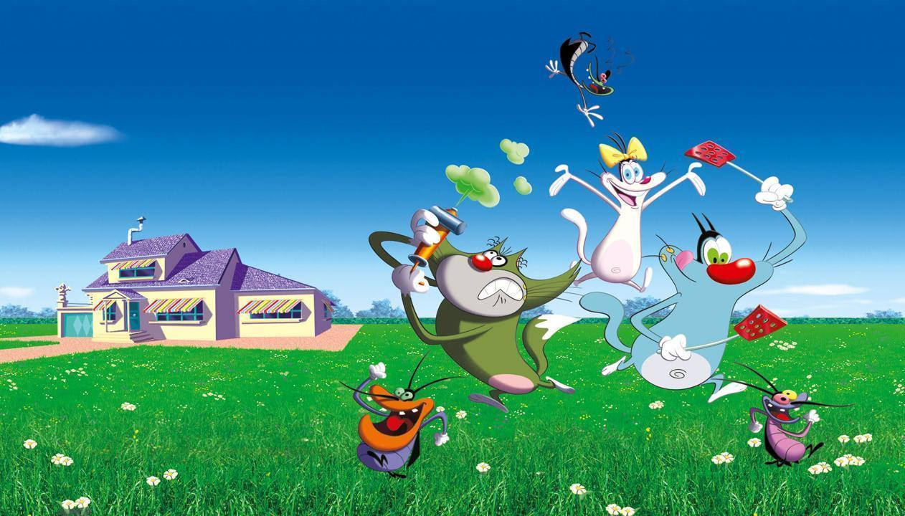
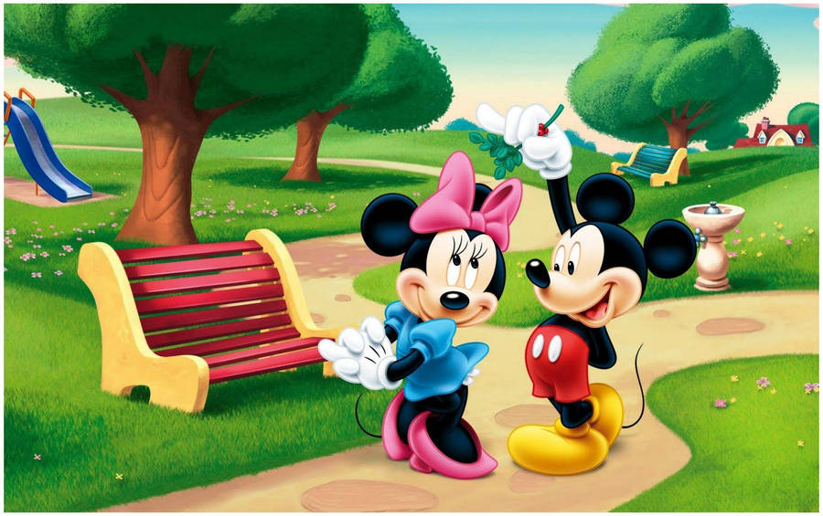
Contact Me
Feel free to reach out to me through any of the channels below:
santhoshreddy.mstr@gmail.com
mohan._.santhosh
Kakinada, Andhra Pradesh, India
View CV Download CV
Text Analyzer
Enter a text to analyze its sentiment and word frequency.